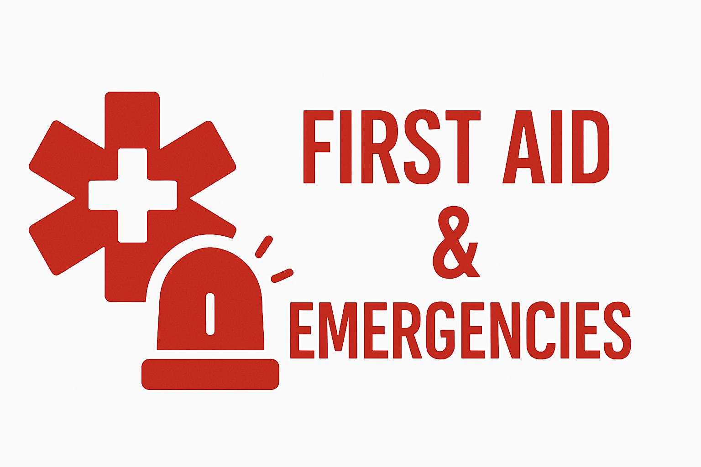

PRIMO SOCCORSO E EMERGENZE

PRONTI AD AGIRE QUANDO OGNI SECONDO CONTA
Il volontariato nell'ambito del primo soccorso e delle emergenze sanitarie rappresenta una delle forme più dinamiche e cruciali di assistenza alla comunità. I volontari in questo settore devono essere formati per rispondere prontamente a situazioni in cui ogni minuto può fare la differenza tra la vita e la morte.
ATTIVITÀ DI PRIMO SOCCORSO
- Servizio di ambulanza
- Trasporto sanitario semplice
- Assistenza durante eventi pubblici
- Supporto in caso di maxi-emergenze
- Collaborazione con la Protezione Civile
- Formazione alla popolazione
FORMAZIONE RICHIESTA
Per diventare soccorritore volontario è necessario seguire corsi specifici che includono:
- Corso base di primo soccorso
- BLS (Basic Life Support)
- BLSD (Basic Life Support con uso del defibrillatore)
- PBLSD (Pediatric BLS)
- Tecniche di immobilizzazione e trasporto
- Gestione delle emergenze traumatiche
ORGANIZZAZIONI DOVE PRESTARE SERVIZIO
- Croce Rossa Italiana
- Misericordie
- ANPAS (Associazione Nazionale Pubbliche Assistenze)
- Croce Bianca
- Associazioni locali di primo soccorso
- Protezione Civile
REQUISITI PER DIVENTARE SOCCORRITORE
- Età minima 18 anni
- Sana e robusta costituzione fisica
- Equilibrio emotivo e capacità di gestione dello stress
- Disponibilità a turni anche notturni e festivi
- Completamento dei corsi di formazione richiesti
- Superamento di un periodo di affiancamento
COSA IMPARERAI
La formazione ti permetterà di acquisire competenze per:
- Riconoscere e gestire le principali emergenze sanitarie
- Effettuare manovre di rianimazione cardiopolmonare
- Utilizzare il defibrillatore semiautomatico
- Immobilizzare fratture e traumi
- Gestire emorragie e ferite
- Operare in sicurezza in scenari di emergenza